labelImg 教學：標註 YOLO 格式資料
目錄
零、建立 Python 環境
待補充。
建議使用 Python 3.9.x（例如 3.9.10），避免使用 3.10 以上版本，以免發生相容性問題。
一、安裝 labelImg
- 開啟終端機。
- 在 Windows 搜尋欄輸入
CMD，開啟「命令提示字元」。 - 執行以下指令安裝
labelImg：
pip install labelImg
二、啟動 labelImg
- 在圖片資料夾中建立
classes.txt（每行一個類別名稱）。
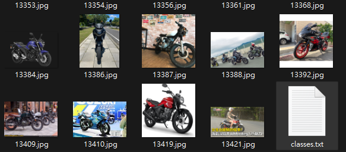
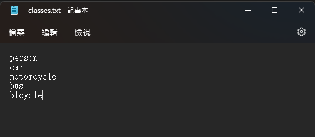
- 在命令提示字元輸入：
labelImg class_file {classes.txt 的路徑}
如果成功開啟 labelImg，代表安裝完成。
classes.txt的路徑請改成你自己的實際路徑。
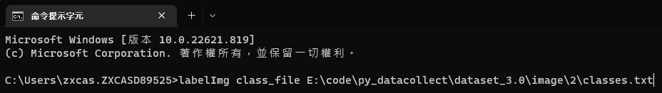
- 成功開啟後，會看到如下視窗：
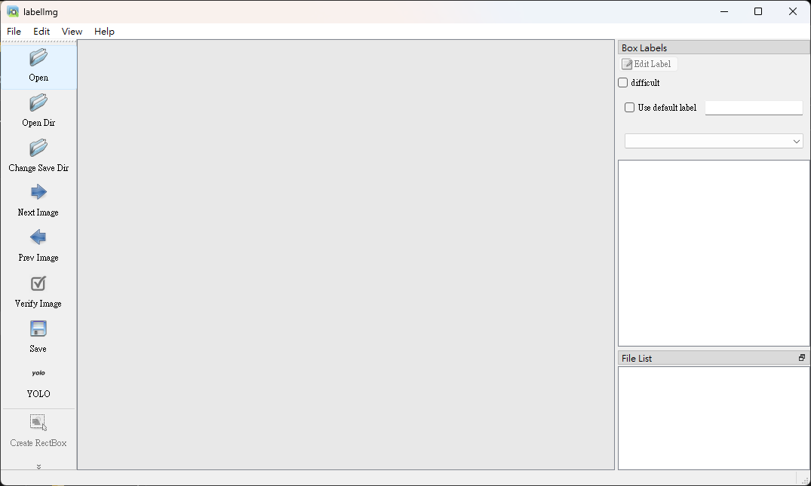
- 左側工具列可拖曳調整位置。
下方教學以工具列放在上方為例。
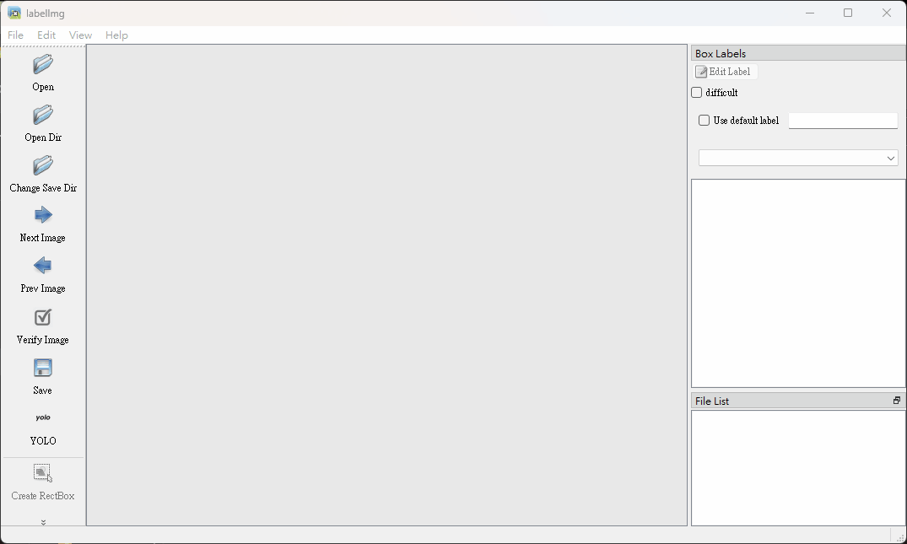
三、使用 labelImg 標註 YOLO
- 切換到 YOLO 格式。
先確認目前格式顯示為
YOLO。
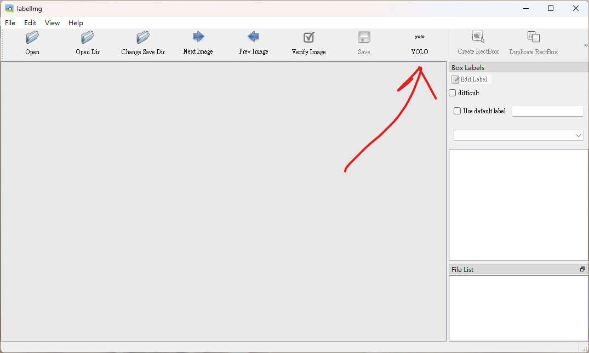
若不是
YOLO，就持續按到切換為YOLO。
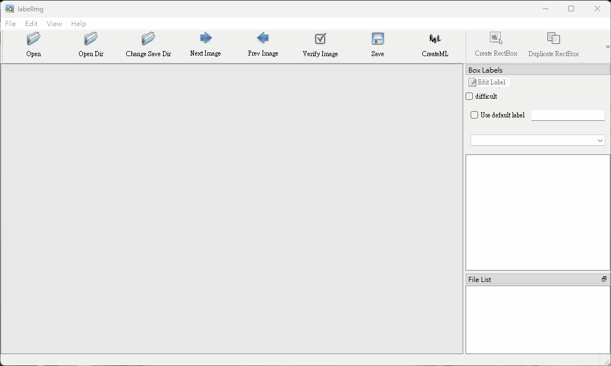
- 點選
Open Dir。
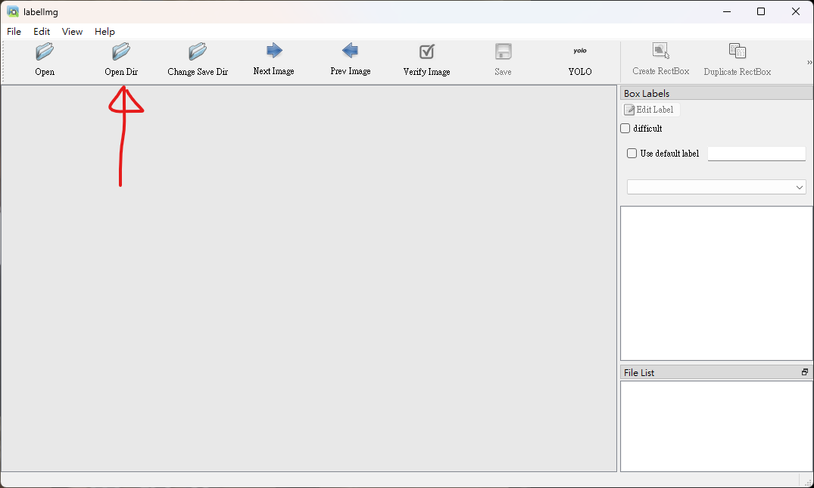
若前面有改過格式，可能會出現警告視窗，點選
Yes即可。
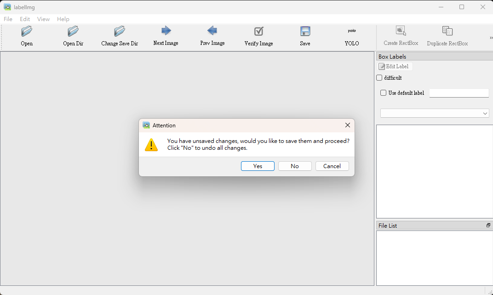
- 選擇要標註的圖片資料夾。
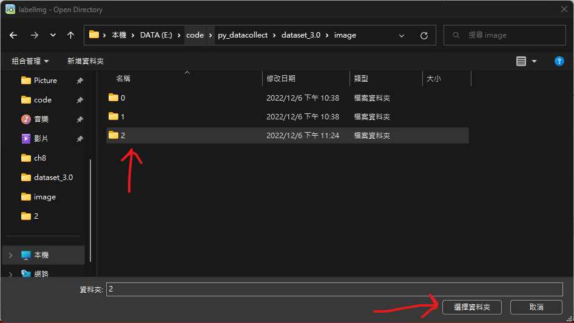
- 畫面會顯示該資料夾中的第一張圖片。
若圖片 5.jpg 同資料夾內已有同名標註檔 5.txt，程式會自動讀取 5.txt 內容並顯示已存在的框。
- 點選
Change Save Dir。
建議選擇與圖片同一層資料夾。
- 開始標註。
點選 Create RectBox 或按快捷鍵 W 進入畫框模式。
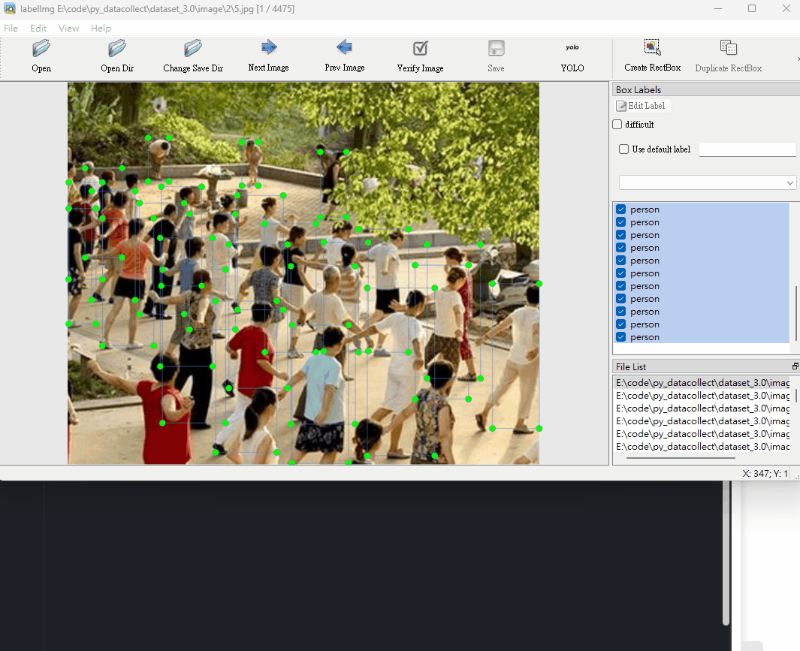
在目標物件上按住滑鼠左鍵拖曳，建立完整包覆目標的 bounding box，放開後選擇對應類別。
若啟動 labelImg 時已載入 classes.txt，選類別時可直接從列表挑選，不必手動輸入。
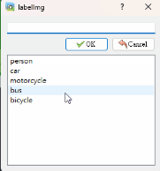
- 儲存標註。
點選 Save 或按快捷鍵 Ctrl + S。
儲存後會產生與圖片同名的標註檔，例如：
- 圖片：
5.jpg - 標註：
5.txt
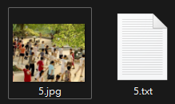
5.txt 的每行為一個框，格式如下：
<class_id> <x_center> <y_center> <width> <height>
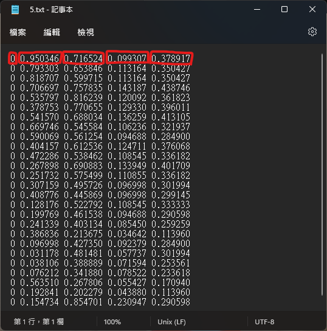
數值都落在 0 到 1，因為會自動正規化。舉例：
- 影像尺寸：
640 x 640 - 原始框資訊：
x = 150
y = 300
width = 50
height = 200
正規化後：
x = 150 / 640 = 0.234375
y = 300 / 640 = 0.46875
width = 50 / 640 = 0.078125
height = 200 / 640 = 0.3125
- 切換圖片。
標完並儲存後可按 Next Image 前往下一張；若要回上一張可按 Prev Image。
- Auto Save（自動存檔）。
若擔心忘記按 Save，可開啟自動存檔模式。
- 點選上方
View。
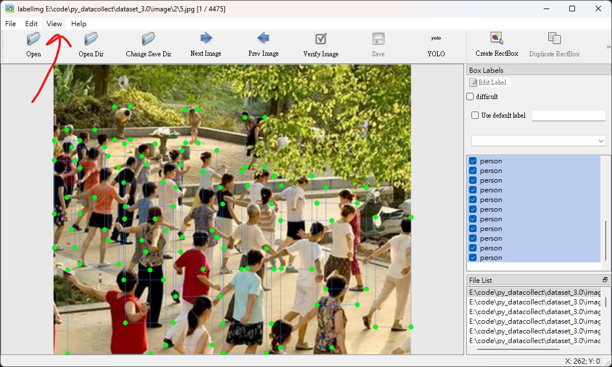
- 點選
Auto Save mode。
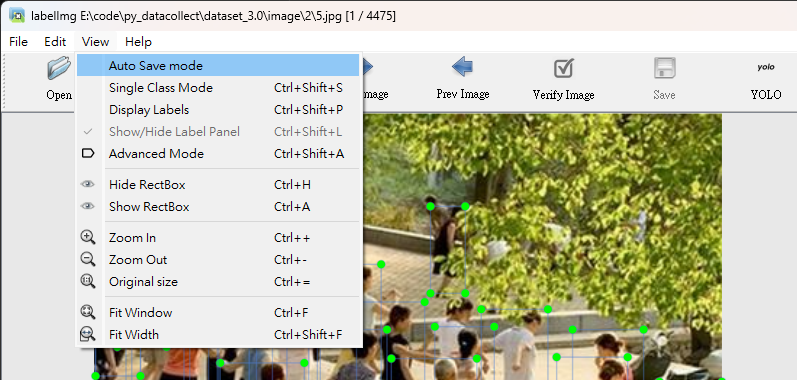
- 有打勾即代表已啟用。
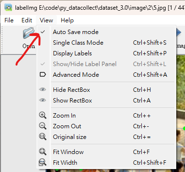
四、其他功能
- File List
右下角 File List 會列出資料夾內所有圖片。在該視窗連按兩下可彈出，再連按兩下可收回。
File List 也會顯示目前所在圖片，可直接連按兩下跳轉到指定圖片。

結語
如果內容有錯，歡迎回報。